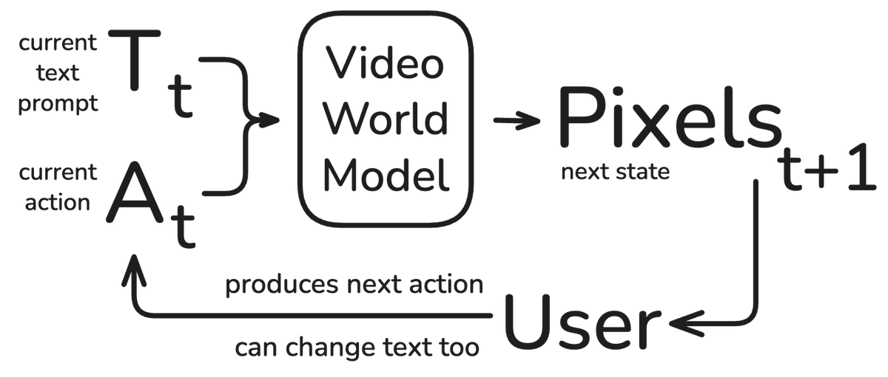
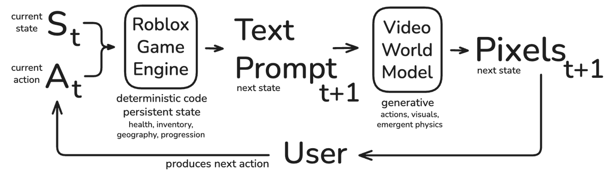
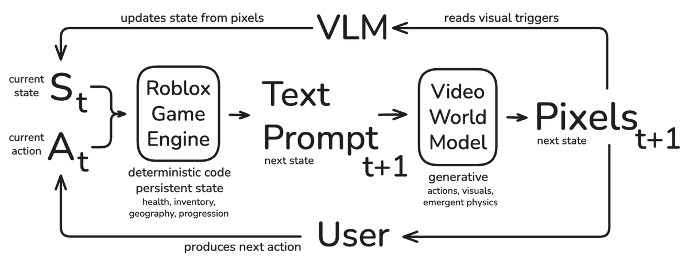

What makes a game fun? And when will world models be “fun”? Can a video world model carry a game that’s actually fun to play?
Try Worlds Research Station for a limited time, with one explorer, a team at Mission Control, and a generated world reacting in real time. Then read on for our approach.
Video world models already show sparks of what may become a new foundation for interactive experiences. In real time, they can generate scenes with complex real-world physics and lighting, across an almost endless diversity of worlds. These are phenomena that are incredibly hard to simulate with a traditional game engine. These models offer a possible path for visualizing and authoring high-fidelity game-like experiences to a broader category of indie game developers.
The term “world model” is often used to describe the modeling of state dynamics (aka a forward dynamics model), arguably implying a strong understanding of the world. Action-conditioned video models predict pixels that have the appearance and dynamics of the real and fantastical worlds they are trained on. [1]
However, the initial renditions of interactive video models are often not accepted as traditional “games”. While visuals play a central role in gaming, simpler elements of game design such as goals and rewards are also important.
At Roblox, we set out to see how far we could push video world models, focusing specifically on gameplay and interactions. As the first step, we trained an action-conditioned 14B Text-Image-to-Video (TI2V) video world model that runs at 24fps, and gave it to a team of Roblox game developers to see if they could build a game with it. Along the way, we designed a lightweight harness, which we call a Game Cartridge, that couples the Roblox engine with a real-time Vision Language Model (VLM) observer, allowing the engine to manage abstract game state while the video model generates the world. Here’s what our in-house game developers built, what broke, and why we think world models will need programmable harnesses to become games…
What unique constraints do games impose?
To build a compelling game we needed to ensure a few levers of control built into our model.
Movement: an agile locomotion control rig.
- 1st and 3rd person
- Diverse actions like jumping, sprinting, swimming, emoting
- Modifiers like wings, vehicles, snowboards
Interactions: the space of actions within games is incredibly large beyond the few degrees of freedom needed for movement.
- Manipulating the world with tools or interacting with objects
- Collecting and equipping/unequipping items
- Responsive reaction from characters and the environment
Scene control: honoring creator intent and editability.
- Changing the scene composition, adding or removing objects
- NPCs with non-trivial behavior
- Physics-level control like the strength of perceived gravity in space or underwater
The baseline conditioning in video models is not suitable for interactive, immersive gaming. A single homogenous text prompt makes it difficult to edit some components without affecting others. To allow for finer control at inference, we decomposed the text conditioning into a few core pieces: Actions (movement), World (for the environment and NPCs), Character (main avatar and equipment), Dynamics (perspective and physics) [2].
Here we showcase a few of those control levers in action:
Starting with agile locomotion (sprinting/jumping) and aggressive global scene editing, here we cycle through 7 completely different prompts cleanly morphing between the environments and character rigs. Starting with a frog in a bustling NYC avenue, we can transform into a firefighter in a warehouse, a camel caravan, riding a dragon, to a 1st-person porch in the countryside, to a backpacker in the Himalayas, to a diver underwater, and finally back to almost the same bustling NYC avenue. Notice the taxi traffic behavior responds to the player approaching.
Next, we start with a farmer using a sickle to harvest wheat, emphasizing the manipulation of the environment by use of tools with motion animations. We then show local scene editing by switching the avatar’s equipped item to a firing rifle, then to a flaming torch, which causes a fire to spread.
By orchestrating prompts, we could elicit quite interesting dynamics from our model as shown above. This surface-level interaction paradigm allows the player to serve as a puppeteer or dungeon-master, scheduling and timing the prompts to edit the world under their control and desires. However, a typical game does not expose omnipotent power to the player.

We hypothesized that a system where a developer writes a code harness around the VWM to dynamically select text prompts could enable a few core aspects of gaming that are missing from purely neural world models today: creators, state, and progression. Creators could use it to make immersive worlds that reflect their stylistic vision, with a persistent abstract state that progresses predictably as they play. By dynamically selecting prompts in a controlled fashion as the world is getting generated, we placed control of the scene under the responsibility of the developer’s code allowing us to implement quest progression.
We were inspired by the earliest of games, teletype games, which featured little to no visuals, yet had incredibly deep worlds with rich game logic. Take Zork or Oregon Trail for instance, which are simple text state machines that process text input and produce the next state of the world, allowing you to explore rooms and interact with objects.
Our Harness
The first component of our system is this programmable code harness running within the Roblox game engine, which we call a Game Cartridge. Here, a developer writes traditional Luau code to define a state machine that tracks variables (like current objects in the world, health, or quest progression) and executes the logic. A sidecar service on the game engine then serializes the data model into text prompts fed to the VWM.

To close the loop, the engine needs to know what is happening in the generated video frames because the action outcomes are ultimately dictated by the VWM. We utilize a VLM as a perception model, observing the generated frames. The developer defines "visual triggers" within their code harness (e.g., querying the VLM, "Has the player collected an energy canister?" alongside the latest frames). The VLM continuously watches the generated pixels for these specific events. When a visual trigger is detected, the VLM fires a callback to the code harness. This synchronizes a primitive sense of positioning and action outcomes [3] to the game engine, which then updates the abstract state (e.g., updating player health and incrementing the score counter) and, in turn, selects the next text prompt (e.g., spawning a portal or taking you to the next scene). This grounds the video model's outputs into playable mechanics. We also tried directly connecting the VLM to write prompts back to the VWM, removing the Roblox game engine entirely, but found greater success allowing the system to store variables and run deterministic code.

Once we had this simple harness, we were able to define programmable game loops and execute them end-to-end with the video world model. Because this system allows a creator to build an experience, bake it into a repeatable state, and share it with others, it started to show signs of the game-making process many of us are familiar with. Befitting of the name Game Cartridges as they provide the relevant structure to encapsulate an experience powered by a VWM.
Game Cartridges
Our devs structured the narrative into chapters, defining scenes by images, and driving the state transition logic via Luau code, supplemented by the VLM perception model.
As one developer noted: “Building a game with this process required learning how to create visuals with the AI model itself, combining prompts and different pictures to create worlds. Then learning how to manipulate those worlds to get things to spawn in, and building a bridge between the model and the actual Roblox game engine which controls the majority of the logic.“
Today we are releasing access for a limited time to “Worlds Research Station,” one of the prototype Game Cartridges built by our developers in Roblox Innovation Studio. This prototype features a tangible, cooperative gameplay loop: one player explores dynamic, generated worlds controlled by their teammates back at Mission Control. As the explorer, you'll need to scavenge for energy cells to replenish your health and survive the elements.
Wanna try it yourself? Play the game here.
Through developer testing, two core limitations emerged that point toward meaningful directions for further research:
Control and Flexibility:
Targeted placement of objects in the scene felt hard to control with text prompts as their spatial descriptions need to be invariant to player WASD movement. Our current video world model lacked native 3D spatial grounding, making layout design challenging [5]. The prompt “a canister appears in front of the character” can become a conflicting signal if you turn around and walk away, causing new canisters to continuously re-appear. However, a prompt like “a canister appears at the base of the tree” performs better. This perhaps highlights the value of 3D or relative layout information, and how video models can be co-developed with developers in mind to elicit desired mechanics [4].
Because our model was trained on 5-second clips paired with global world captions, its counterfactual understanding wasn’t strong enough to handle long horizon state transitions by itself. Developers observed that during the rollout, models often lost track of which step of the chain the video is currently on, degenerating into looping behavior. For example, if you prompt an autoregressive video model with “a rocket launches from the ground” and roll out for a long horizon, you end up seeing looping behavior where the rocket takes off, lands, and takes off again; in this case, updating the prompt to “a rocket in space” is eventually required to avoid repeating the “launch.” Future endeavors should attempt to instill better counterfactual (conditional mechanics) understanding into the VWM.
Visual Consistency:
While the code harness effectively manages the abstract state and utilizes serialized text prompts to inject detailed environmental descriptions, a sliding window KV cache alone is insufficient to ensure strict visual consistency (e.g., maintaining a character's exact identity when they turn away from the camera and back). Extending these windows with compression or spatially indexed caches [6] is one path to maintaining visual object permanence. Visual drift in appearances can also be a signal of a lack of proper conditioning, where the text prompt is not specific enough to constrain the generative model. Dynamically injecting reference images into the prompt to ground multiple identities and object appearances on the fly could bridge the gap further (a task potentially well suited for a harness).
What’s next?
In our mission to become the highest-fidelity, interactive, multiplayer gaming platform, our exploration using Game Cartridges illustrated that by augmenting a Video World Model with a programmable coding harness, a developer could begin to add game-like mechanics to what was previously just an explorable world without objectives. However, it also highlighted the limitations of Video World Models for owning the majority of the visual state, and suggested that more of the underlying game logic and 3D state should be implemented in the Roblox game engine. The video model is then used to uplift the view into high-fidelity or any style desired by the game developer [5].
Game Cartridges also serve as an evaluation harness, helping us benchmark the consistency, coherence, and responsiveness of these models in the pursuit of game making. In the future, when video world models become more robust, we may still desire having programmable code harnesses around them. We similarly envision this becoming a useful pre-visualization tool in the game development lifecycle, helping prototype quick visual aesthetic and gameplay ideas starting from images and text.
Footnotes
[1] I’ve been interested in world models without knowing it since I was young, when I would wake up without the ability to recall any image of my nightly adventures leading me to believe that I hadn’t dreamt.
Growing up we are often told to dismiss our dreams and our nightmares. This often leads many people to believe that they cannot dream at all or that they did not dream last night. This is not usually true! Humans often dream 6-7+ times, but as soon as we wake up we tell ourselves: “Ah! It was just a dream” and we train ourselves to forget. We actively suppress our memories of dreams; and years of this results in one believing they did not dream because they simply cannot remember.
And thus comes the first tool in an oneironaut’s toolbox: the dream journal. Waking up and immediately jotting down every image you can remember from your nightly adventures that you can recall. And after about a week of actively recalling your dreams, you become surprisingly aware of their behaviors. You start to gain the ability to piece together the boundaries of dreams (aka REM sessions), and you start to notice patterns. This is how I became conscious that I was dreaming during a dream for the first time when I was younger; I realized I had entered a very similar dream I had jotted down in my journal a few days ago. And thus I became lucid for the first time. [A Field Guide to Lucid Dreaming: Mastering the Art of Oneironautics by Dylan Tuccillo, Jared Zeizel, & Thomas Peisel.]
At the behest of my will to dream, I became enthralled by the art of oneironautics: becoming aware that you are asleep experiencing a simulation architected by yourself. A world where by merely thinking you can conjure up whatever your heart desires and even summon and talk to the internal representations you have of the people around you and those you love.
After taking interest in why it is that our brain developed this universal behavior and how it appears across many species, I became interested in the concept of internal world models.
Although the origin of this concept goes all the way back to ancient Greek philosophers [https://people.idsia.ch/~juergen/world-model-boom.html], I like to point to Kenneth Craik who in 1943 questioned how it is that organisms may reason and act intelligently in the real world. He describes an internal world model that allows organisms to play out certain scenarios in their heads, to simulate the outcomes based on their prior experience.
“If the organism carries a “small-scale model” of external reality and of its own possible actions within its head, it is able to try out various alternatives, conclude which is the best of them, react to future situations before they arise, utilise the knowledge of past events in dealing with the present and future, and in every way to react in a much fuller, safer, and more competent manner to the emergencies which face it.” (The Nature of Explanation, Craik 1943)
The predictive power that you and I experience and many other species across the world do too, is not programmed in the sense that a game engine is. Rather it is learned through experience as we interact with our complicated world. Evolution found it useful for agents to be able to simulate other agents in their head in order to predict their responses and take actions that would result in rewards and preserve the chances of survival. And even deeper than that, one doesn’t get a lot of chances to get chased by a lion out in the real world. The first time you do, you better know what to do. And I wonder if that is why we all have nightmares of being chased by lions while we are young.
[2] This scheme avoids spatially coupling the main character within the environment (e.g.,“riding a bicycle on a path” which is not invariant to WASD actions, causes paths to unnaturally reappear when trying to steer off-road). We mapped raw WASD and mouse inputs directly into a structured text action grammar -- for example: “Movement: Forward; Camera: Left; Action: Jump;” -- temporally aligned to the latent frames where those actions occur. This unified text-space action scheme supports custom keybindings during training and inference, where interaction keys like spacebar, shift, E, can be mapped into semantic text actions like E -> “Open door.”
[3] In this case, we are essentially using the VLM as an external reward model to measure whether a certain condition has been met or not. Instead of having a separate perception model, DreamerV4 [https://danijar.com/project/dreamer4/] explicitly predicts the 0->1 reward and value of the state against a particular defined task like “mine_diamonds” across the rollout. Although they ultimately used it to train RL agents, it nonetheless showcases how a reward model can be used to “measure progress against a quest.” One can imagine training this capability into the VWM itself like Dreamer does, removing the need for the VLM observer.
[4] Among many recent works exploring video world models for gaming, one of note is MultiGen [https://ryanpo.com/multigen/] which allows for persistent editable multiplayer worlds via explicit geometry
[5] While in this exploration, the Roblox game engine ultimately only handles abstract variables and game logic, a proper 3D integration is an active area of research and something we hope to demo in the future. https://about.roblox.com/newsroom/2026/04/roblox-reality-hybrid-architecture-democratizing-photorealistic-multiplayer-gaming
[6] We already see video equivalents of RAG in the form of city scale spatial caches that aim to provide persistent lean memory via a 3D-grounded keyframe database allowing the model to condition on the geometry embedded inside of multiview image references [https://seoul-world-model.github.io/]